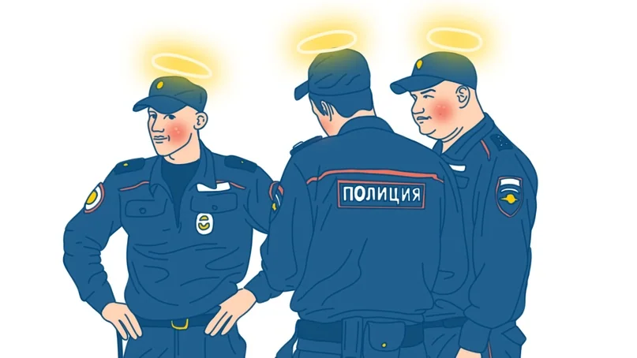

Данила Блюз вознамерился опровергнуть модный тезис о том, что «мусора — позор России». И вспомнил времена, когда в нашей стране вместо добренькой полиции была страшная оголтелая милиция.
Как только ты начинаешь вздыхать о былых временах (о том, что раньше было «ух!», а теперь — «эх»), моментально должны приезжать специальные службы и увозить тебя в дом престарелых. Самое старперское дело — сравнивать настоящее и прошлое. От таких бесед веет бабкиным комодом, валерьянкой и немощью. Но даже при таком раскладе, даже рискуя прослыть ностальгирующим старпером, я скажу: вы, молодежь, совсем ебанулись!

Я серьезно охуеваю, когда слышу от молодых и дерзких, как они дико ненавидят ментов. Я в ахуе от этой модной кричалки «мусора — позор России». Да вы мусоров не видели, щенки! Нет, я не буду сейчас оправдывать полицейское насилие на митингах — это однозначно плохо: плохо бить женщин в живот так, чтобы у них потом было сотрясение мозга, плохо хватать мирно стоящих граждан и тащить их в автозак, я за свободу митингов и собраний, гарантированную нам Конституцией.
Я говорю в целом об антиполицейских настроениях, которые начинают расцветать среди молодежи. Неужели основание для них — эти вот ролики с митингов? Если так, то это печально, потому что, как по мне, полиция реально шелковая по сравнению с милицией из 2000-х и 90-х. Когда проходила полицейская реформа в 2011 году, все похихикивали, дескать, херня все это, шило на мыло поменяли, как были мусора, так и остались. А ничего подобного, ничего не осталось.
Помню милиционеров из своего юношества. В какой-то статье тех времен я писал, что испытываю одинаково неуютное чувство, когда ко мне приближаются менты и гопники. Это потому, что разницы между ними никакой не было — обшманать и отобрать у тебя деньги или телефон могли одинаково и те, и эти. Милиционеры младшего состава являли собой удручающее зрелище: недавние дембеля, которые не смогли найти нормальную работу (или просто не хотели ее искать). Как и гопота, свой гнев, свою неудовлетворенность они срывали на тех, кто слабее. Причем если гопники могли тебя просто по велению души отмудохать, то власть ментов над тобой была безгранична.
Тебя могли запихать в вытрезвитель, потому что у них план по алкашам не выполняется, или забрать в отделение и там пытать противогазом с хлоркой, заставляя взять на себя какую-нибудь жуть. Все как в старой песне группы «НАИВ» «Порядок и спокойствие», когда тебя «сажают в обезьянник», а утром ты чалишь домой с «разбитым таблом».
Милиционеры были тогда нищие и злые. Сейчас либералы возмущаются, что, мол, Путин псам режима повышает зарплату за то, что его охраняют. Так и хорошо, что повышает, потому что раньше, при той зарплате, бабки рубились именно с населения или с крышевания разного рода подпольной деятельности. Думаете, голодные менты возьмут и встанут на сторону протестующих во время митинга? Нет, они будут еще злее мудохать людей дубинками. Уже проходили.

А гляньте на полицейских сейчас. Чистые, трезвые, вежливые. Все «здравствуйте» да «будьте любезны», да «не соблаговолите ли, милостивый государь». Раньше ты попробуй на мента наведи камеру — сразу дубинкой промеж глаз прилетит, и это было в порядке вещей. А сейчас — полная прозрачность, хоть ты весь день за ним с камерой ходи — глазом не моргнет. Даже жаль их иной раз. Какая-нибудь пьяная тетеха лежит на асфальте обоссанная, материт их, угрожает, а они, вместо того чтобы ей берцами ребра сломать, церемонятся, как с принцессой, увещевают: «Ну что же вы, женщина, как вам не совестно, ну перестаньте, люди же смотрят».
А вездесущие малолетки наслушаются своего блатного рэпа про то, какие менты козлы, насмотрятся «Кактус ТВ» с Камикадзе и начинают качать права, словно они юристы из ФБК. Их бы в воспитательных целях хорошо ремнем отходить по жопе. А нынешние полицейские только менжуются, опускают очи, как девицы, и уходят плакать. Наверное, о своей неблагодарной ментовской доле.
Повторюсь, это все я безотносительно к насилию на митингах и каким-то частным случаям беспредела. Сейчас избиения и хамство все-таки исключения из правил — раньше подобное творилось на каждом шагу: у всех в арсенале была история, связанная с ментовским беспределом. И это тогда считалось нормой. Сегодня же все такие нежные стали, что уже и в живот их не бей, и руки им не заламывай. «Что это такое, я в харю менту плюю, а он меня дубинкой за это. Беспредел!» Да вы охуели, ребята!
У меня в 2011 году был текст, он назывался «Куда ушли милиционеры?». И закончить я бы хотел финалом оттуда. «Но я верю — и вера моя крепка, — что в день последней битвы, когда в стране начнется бардак, хаос и демократия, когда наступит самый последний, самый пиздецовый митинг, спустятся с небес те старые милиционеры с усами и в фуражках. И оттаскают за волосы какую-нибудь крикливую бабу, дадут ей в ебало и скажут: «Хорьки, блядь! Кто еще? Че те не нравится?!». И наступит порядок и спокойствие, потому что «еще» будет никому не надо и всем все вдруг понравится».